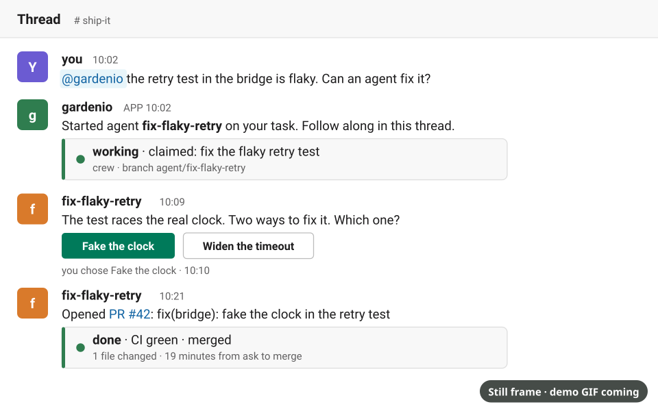
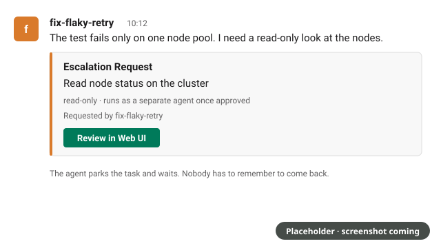
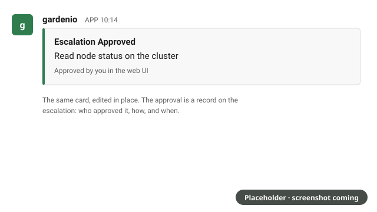
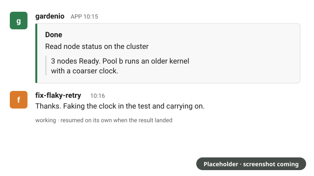

Run a fleet of coding agents from Slack.
Humans decide, agents build.
Mention the bot to hand an agent a task. Follow it in the thread, answer its questions with a button, and review the pull request it opens. The agents run on your Kubernetes cluster, or on a laptop that joins the fleet.

How it works
-
1
Slack thread
Mention
@gardeniowith a task. The thread becomes the agent's conversation: live status, questions, and results all land there. -
2
Agent
The controller starts a pod running Claude Code in its own git worktree, with credentials leased for the job and a terminal that survives restarts.
-
3
Bead
Every task, decision and escalation is a bead in one tracker. When the agent needs a choice or a permission it lacks, it asks, and you answer with a button.
-
4
Pull request
The agent pushes a branch and opens a PR. Review comments and CI results flow back into the thread until it merges.
Permissions as tickets
Agents run with only the access their task needs. When one needs more, a read-only look at the cluster or a privileged spawn, it files an escalation and stops. A person approves it, a separate agent runs it, and the result lands back in the same thread, where the first agent picks its task up again.
-

1 The agent asks, in its thread, and waits. -

2 A person approves it. The card records who and how. -

3 The result lands in the thread and the work resumes.
Frames are placeholders until the demo screenshots are taken.
Integrations
-
Slack
The control plane: mentions spawn agents, threads follow them, buttons answer decisions, reactions stop them.
-
GitHub
Agents open pull requests; review comments and CI results flow back into the agent's thread.
-
k3s
One pod per agent on a small Kubernetes cluster, installed with a Helm chart.
-
Claude
Each agent is a Claude Code session with its role, task and project advice loaded at start.
Quickstart
Clone the repo and run the onboarding script. It checks first, shows its plan, and asks before each change. Linux, macOS or WSL.
git clone https://github.com/mattbakerconsulting/gardenio.git ~/gardenio
~/gardenio/scripts/onboard.shFrom clone to a first agent pull request on your own repository in about ten minutes →